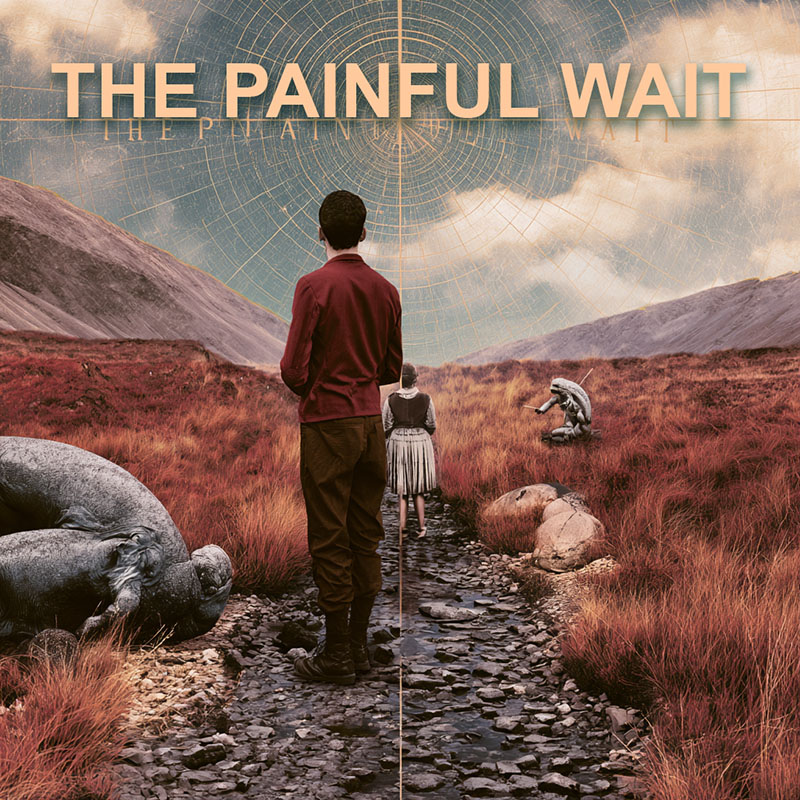
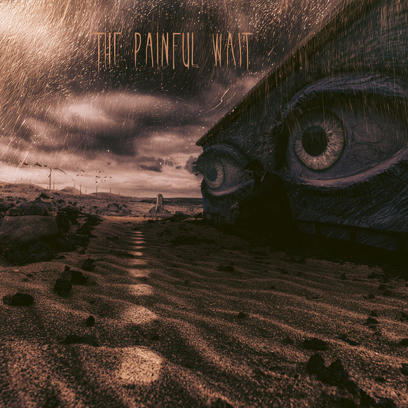

We had the rehearsal studio. Isla turned up a day late. This came out.

First take of the day and the one we kept.

Different day, same reason. We knew what we were doing by then, which is not always an improvement.
Isla, we love you. But why you always late?
Most of it is subtraction. Where a part comes out, where a chorus gets shorter, which of two good ideas has to go so that the other one lands.
The rest is repair, live, without stopping. Restrung the Les Paul mid-set once and nobody noticed. That is the standard and there isn't a higher one.
Nothing on this list is interesting. That is deliberate.
Every one of them has a duplicate in a case somewhere. That is the entire philosophy.
Somebody has to read what is put in front of us, and it is better if that somebody is in the band. I do it so that a decision about our music is made by a person who has to stand next to it afterwards.
It has never been about the money. It is about staying able to walk out and play to a room full of people who came. That is the only thing being protected here. Everything else is furniture.
The party days are gone and the music is still here. I would make that trade again tomorrow.